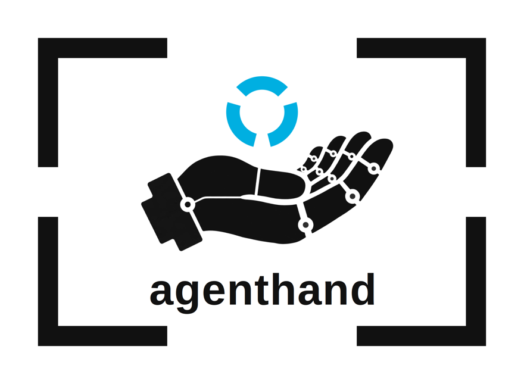
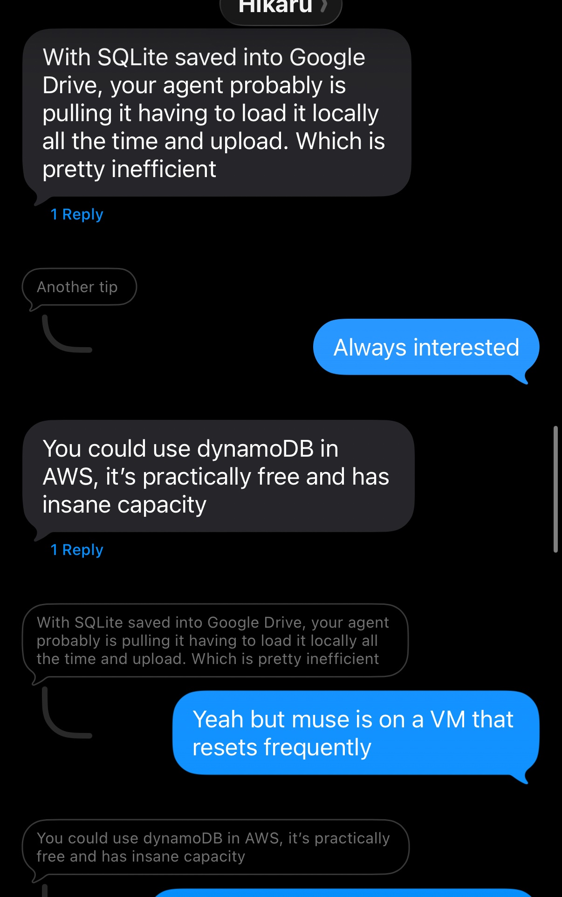
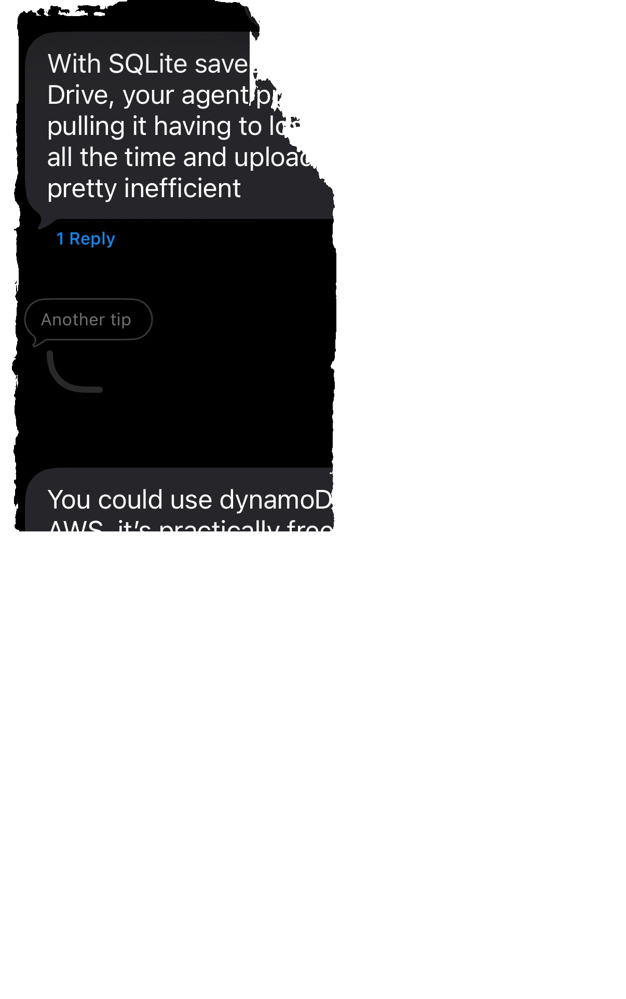
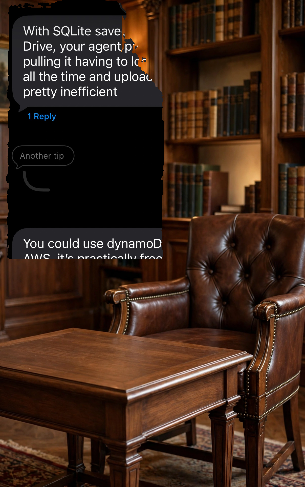
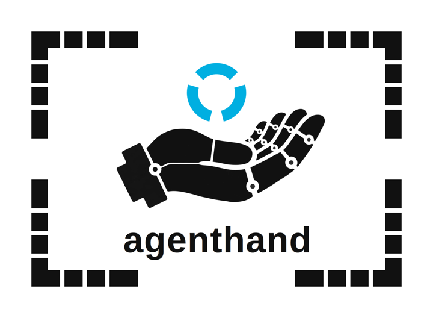

agenthand
agenthand turns any photo into a working asset, for AI agents that help people sell.
MCP SERVER · META GLOBAL AI DEVELOPER HACKATHON · OCT 26 – NOV 4, 2026
FROM THE VERIFIED RUN · 2026-10-26 · RECEIPT IN CHAPTER 02
580,613 pixels checked · 0 changed
How it is counted: every fully opaque pixel of the stored product layer, compared byte for byte against the final image. The numbers are that run's own, and the same check runs in your browser.
Verify it yourselfThe seller never opens agenthand. Their agent calls it, the way a hand is called: quietly, in the middle of other work.
01What it does
Three tools, one asset
A seller hands their agent a photo from the kitchen table: bad light, busy background, the item half in shadow. Three calls later it is a listing.
STEP 1
identify
Reads the photo and plans the job. What the item is, what a buyer would call it, the words for the listing, and exactly which pixels are the product.
STEP 2
cut_out
Lifts the product out of its photo, pixel for pixel, and hands back a clean cut-out on transparency. Nothing is redrawn; the real product is the layer.
STEP 3
draw
Stages the scene around it: a regal reading room, a clean studio sweep, a table set for the season. The setting is generated. The product is not.
# THE CHAIN, AS RECORDED — the verified run, 2026-10-26 → cut_out the photo, stored as asset://e3f0428f… no concept given; the planning step runs inside ↳ identify muse-spark-1.3 · 3,159 in / 1,638 out tokens $0.007544 ← asset://b8663615… the product layer, untouched $0.0025 mask asset://7dc19362… · sam-3.1 · 1 image → draw asset://b8663615… + a scene prompt muse-image-1.0 ← asset://45deaf1a… the staged composite + fidelity receipt $0.01 plate asset://4f1740f4… · the product never sent to the image model # receipt: 580,613 opaque pixels checked · changed 0 · total $0.020044 # photo to receipt in 36.5 s, by the asset records' timestamps
Assembled from the run's own records: the spend ledger's settled lines and the asset sidecars. The full hashes are in the receipt below — and the verifier further down grades against the run's actual receipt file, published beside the images, not against numbers typed into this page.
Open the cached replay for the same run's three recorded calls, assets, ledger, and receipt. It is a replay of a real run, not a live call.
02Fidelity Lock
The product is never regenerated
Generated staging has a trust problem: buyers cannot tell whether the item in the pretty picture is the item that ships. Fidelity Lock answers it with proof instead of promises.
The image model paints only the empty scene. The real product layer is placed into it by plain, deterministic code, untouched. Then agenthand counts: across the whole product, the number of changed pixels is zero, and it prints the receipt to show it.
- The product is cut out of the seller's photo and stored untouched, with hashes of the source, the layer, and the mask.
- The image model generates the background scene only. It never receives the product's pixels.
- Deterministic code composites the stored layer onto the scene. Before anything moves, the stored hashes are verified.
- Every result ships with its receipt: the hashes, what was transformed, the changed-pixel count, and the cost of the calls that made it.
The claim is precise on purpose: the stored product layer reached the final image unchanged. Edge pixels that blend with the scene are counted separately in the receipt, never hidden inside the zero.
THE PROOF — THE RUN'S OWN FILES
These are the byte-exact files from the verified run receipted above, not recreations. One honesty note: the "product" in this first end-to-end fixture is a chat-screen cut-out (the staged scene is a reading room). The files, hashes, and counts are the real run's; when the product-photo run lands, this fixture swaps as a data change.
[ byte-exact run files, shown unedited · the product layer never moves; only the scene behind it changes · the generated plate is shown centre-cropped to the frame, as the run itself cropped it · white / ink / checker are display backdrops, not run assets ]
VERIFY IT YOURSELF
Do not take the receipt's word for it. This runs entirely in your browser. The frozen sample is displayed in the judge path below; when you click one of its check buttons, the checker fetches the run's receipt file and the byte-exact source photo, product layer, and final output, hashes the files with SHA-256, checks the hashes against the receipt it just fetched, then decodes both images and counts every fully opaque product pixel against the output. The one number the checker will not take from the receipt is the changed count a pass requires: zero, enforced in the code. The checker decodes the PNG data itself rather than using the browser's colour-managed image decoder, so an embedded Display P3 profile does not change the pixel values being counted — the same convention the Python receipt uses. The profile is not stripped, and every file hash still has to match.
ONE-CLICK JUDGE PATH — FROZEN SAMPLE PRELOADED
No upload and no file picker. The frozen sample below is already selected; each button fetches only these recorded files and the published receipt.



The tamper button is separate and pixel-only: the encoded files stay byte-identical, so their file hashes must still match; exactly one decoded, fully opaque product pixel is flipped, and detection requires the scan to report exactly 1 changed. Deep link: ?tamper=1 runs that check on load.
Frozen sample selected. Not run yet.
THE CHECK, IN THE OPEN
This is the counting code itself — the same function the buttons above run, copied verbatim from verifier-v6.js.
/* Replicates composite.py's _measure for the claim that matters:
* a foreground pixel with alpha 255 must appear in the composite
* byte-identical. fgData / outData are RGBA byte arrays (ImageData.data).
* Chunked so the caller can animate the "checked" counter; resolves to
* {checked, changed}. */
function countChanged(fgData, outData, width, height, opts) {
opts = opts || {};
var chunkRows = opts.chunkRows || 64;
var onProgress = opts.onProgress || function () {};
var schedule = opts.schedule || function (fn) { setTimeout(fn, 0); };
var checked = 0;
var changed = 0;
var row = 0;
return new Promise(function (resolve) {
function step() {
var endRow = Math.min(row + chunkRows, height);
for (var y = row; y < endRow; y++) {
var rowStart = y * width * 4;
for (var x = 0; x < width; x++) {
var j = rowStart + x * 4;
if (fgData[j + 3] === 255) {
checked++;
if (
fgData[j] !== outData[j] ||
fgData[j + 1] !== outData[j + 1] ||
fgData[j + 2] !== outData[j + 2] ||
fgData[j + 3] !== outData[j + 3]
) {
changed++;
}
}
}
}
row = endRow;
onProgress(checked, changed);
if (row < height) {
schedule(step);
} else {
resolve({ checked: checked, changed: changed });
}
}
step();
});
}
[ provenance — run: 2026-10-26, produced by agenthand commit 401f113 · fixture: the run's own files, a chat-screen cut-out (see the note above) · the checker on this page is verifier-v6.js, 38.1 KB — read it ]
03Use it
An MCP server, over stdio today
agenthand speaks the Model Context Protocol. Run it locally and point any MCP client at it; a hosted endpoint comes later.
{
"mcpServers": {
"agenthand": {
"command": "uvx",
"args": ["agenthand"],
"env": { "META_API_KEY": "…" }
}
}
}
That is the whole install: uv fetches the published package and runs it. The server starts and lists its tools without a key; the key is only needed when a tool makes a model call. Prefer pip? Install the package and register the installed command instead:
pip install agenthand
{
"mcpServers": {
"agenthand": {
"command": "agenthand",
"env": { "META_API_KEY": "…" }
}
}
}
From source (dev): git clone https://github.com/AUsernameForYou/agenthand, then .venv/bin/pip install -e ".[dev]" and run .venv/bin/agenthand.
Images travel as asset:// handles, not bytes, so tools chain: identify plans, cut_out returns a handle, draw consumes it. Every billable call passes one spend cap with reserve-then-settle receipts, and the server refuses to spend when the ledger cannot be trusted.
04The scale card[ roadmap ]
A known size, laid in the photo
The agenthand scale card is a printed, laminated card that goes in the photo, next to the thing being sold. Its face is the agenthand mark itself: the robot hand, the three arcs, and the black corner brackets that frame them. The only added furniture is a set of white ticks cut into those bracket arms at exact, known positions. Nothing else is printed on it: no numbers, no rulers, no labels. The geometry the pipeline needs lives in a layout profile on the machine side, where every bracket corner and tick sits at known coordinates. It comes as a family, sized by working distance: a 3×2 in mini for close-ups, a 6×4 in postcard for across a room, and a big 10×7.5 in card for across a yard. The 5×7 in card is the product card, the one that sits beside the thing being sold.

A known shape in the frame is a foothold. A prototype estimator already reads the bracket corners and ticks against their known geometry, fits the photo's perspective, and sizes a flat object lying in the card's plane. Estimates come back as approximations, tilde and range included, never dressed up as exact figures. One rule decides whether an estimate is worth anything: pixels. The card needs roughly 150 px across in the photo. Below about 130 px across, the estimator refuses rather than guessing, and says to move closer or reach for a bigger card. The measuring is tested so far on rendered scenes built from the card's real geometry; validation against real photographs is in progress. Distance, area, and volume stay on the roadmap, where more cards placed at more depths would tighten the numbers.
05Status
Built in the open, during the hackathon
agenthand was designed and built during the Meta Global AI Developer Hackathon, October 26 to November 4, 2026. The full chain runs end to end today: identify, cut_out, and draw, live on the Meta Model API, with Fidelity Lock receipts on every staged image. A demo video is on its way.
Built twice, measured side by side
agenthand exists twice: the reference server in Python, and a second implementation in Rust, written as a single binary (source in the agenthand-rust repository). Both were run against the same frozen proof run and measured side by side. The two builds agree exactly: the same output pixel hash (sha256 8b8defea…e802), the same count (580,613 opaque pixels checked, 0 changed), and the same total billed cost, $0.020044 to the micro-dollar. Python stays the reference. What differs is how fast the local work runs:
| Operation | Python | Rust |
|---|---|---|
| Cold start to initialize response | 1,291.5 ms | 2.4 ms (about 540x) |
| Verify over the proof images | 569.7 ms | 91.4 ms (about 6.2x) |
| Estimator run | 2,824.4 ms | 1,802.3 ms (about 1.6x) |
Measured on the same machine (a 2 vCPU AMD EPYC VM), medians of interleaved runs. One honest note: on a real tool call, Meta API latency dominates, so the commercially real win here is cold start, because every MCP client spawns the server fresh for each session.